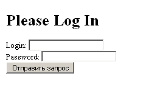
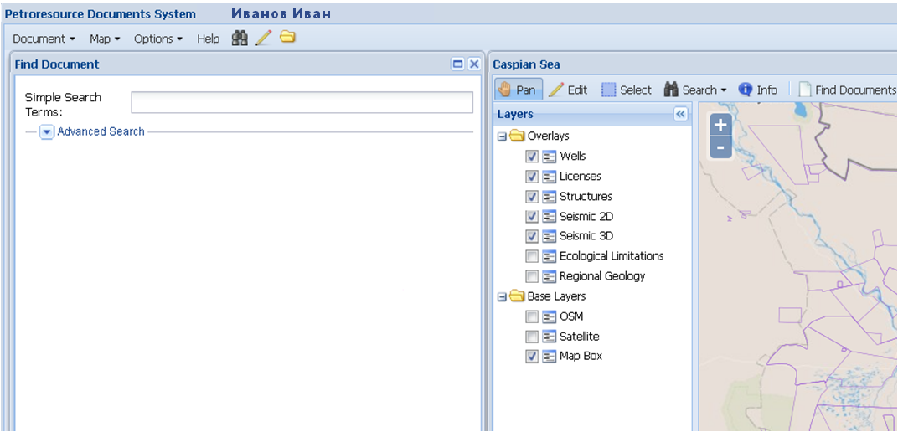

Приложение «Автоматизированная система хранения и доступа к документам» открывается в Web-браузере. Вход в систему осуществляется под учетной записью (логин и пароль) пользователя.
В случае неправильного ввода идентификационной информации появится сообщение об ошибке и будет отказано во входе в систему.После входа в систему все метаданные и действия, связанные с редактированием, будут идентифицироваться с именем того пользователем, который прошел аутентификацию и произвёл соответствующие действия. Пользователь автоматически станет автором метаданных загружаемых документов или изменений, вносимых в метаданные, а также автором добавляемых графических объектов для привязки документов.
Начальный интерфейс АСХД имеет следующий вид.
На верхней панели справа от названия Приложения размещается идентифицированное имя пользователя, под которым был осуществлён вход в систему.
Нижняя панель - панель главного меню Приложения - содержит три раскрывающиеся меню Documents, Map и Options, а также меню Help для вывода в отдельном окне справочной информации.
Рабочее окно начального интерфейса является пустым.